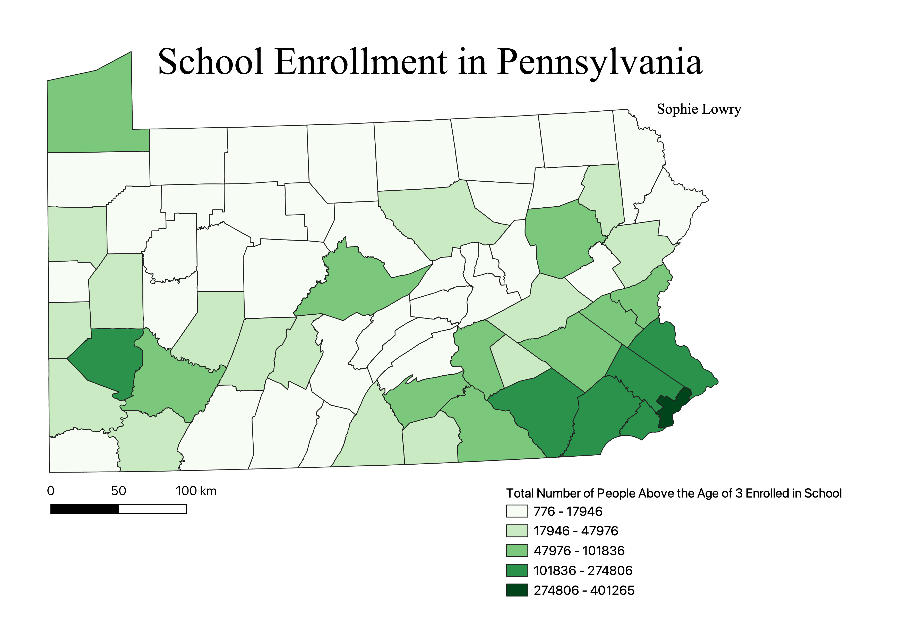

Homework 6 Part 1: Census data choropleth
Sophie Lowry
This map is a choropleth showing the number of people in Pennsylvania above the age of 3 who are enrolled in school.

Data used for this project
Link to cleaned CSV dataset
Link to geoJSON